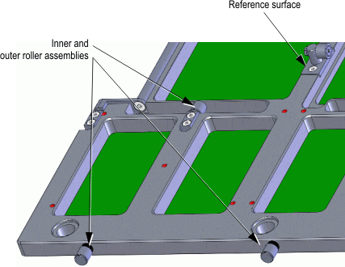

Direct-Probe detail: Roller assemblies
This topic describes details on the roller assemblies of the design recommendation for the probe card/stiffener prober interface.
Eight outer and eight inner roller assemblies clamp the probe card to the tester DUT interface.

For details, see the DUT board stiffener roller assemblies.
Functional changes
- Introduced in SmarTest 6.5.4